Modeling and Velocity-Field Control of Autonomous Excavator with Main Control Valve
Kwangmin Kim, Minji Kim, Dongmok Kim, Dongjun Lee · Automatica 제출 전 원고
한줄 요약 — 산업용 굴착기의 메인 컨트롤 밸브를 개별 관절 독립계가 아닌 전환 가능한 결합 유압회로로 모델링하고, 펌프 유량·역류·스풀 이동 제약을 만족하는 최대 속도계수 λ를 이분 탐색해 정상 시 목표 버킷 속도장을 추종하고 포화·고하중 시 같은 방향으로 감속하거나 정지시키는 방식이다.
1.연구 배경 및 동기
공유 펌프와 전환 회로가 만드는 유압 결합
산업용 굴착기는 높은 출력밀도와 내구성을 위해 유압을 사용하지만, 제조비·유지보수·연비를 고려해 액추에이터 수보다 적은 펌프를 여러 실린더가 공유한다. 메인 컨트롤 밸브(MCV)는 펌프 유량을 붐·암·버킷으로 분배하고, 내부 재생 체크밸브와 바이패스 회로는 압력·유량 조건에 따라 기계적으로 열리고 닫힌다. 따라서 각 관절을 독립적인 단일 유압축으로 보는 기존 제어 모델은 실제 산업용 회로의 결합, 펌프 포화와 회로 전환을 충분히 설명하지 못한다.
논문은 굴착 작업을 사지탈 평면의 버킷 위치·자세 속도장 추종 문제로 정의한다. 원하는 궤적의 위치 오차를 무리하게 따라잡는 대신, 현재 버킷 자세마다 작업 방향을 주는 속도장을 만들고 물리 제약이 허용하면 완전한 속도로, 허용하지 않으면 방향을 유지한 채 감속한다. 지중 장애물로 정지한 뒤 장애물이 사라져도 속도장 방향을 따라 자연스럽게 작업으로 복귀하고, 과도한 위치오차로 잘못된 방향의 큰 명령이 발생하는 것을 피하려는 목적이다.
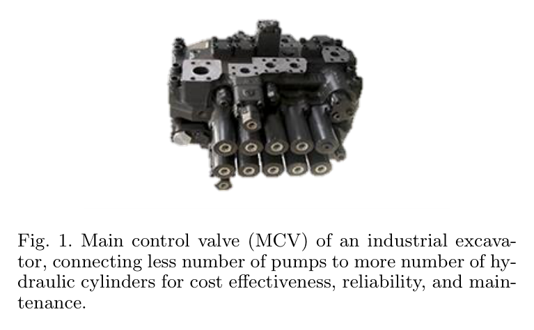
원문 Figure 1 · PDF p.2 — Fig. 1. Main control valve (MCV) of an industrial excava- tor, connecting less number of pumps to more number of hy- draulic cylinders for cost effectiveness, reliability, and main- tenance.
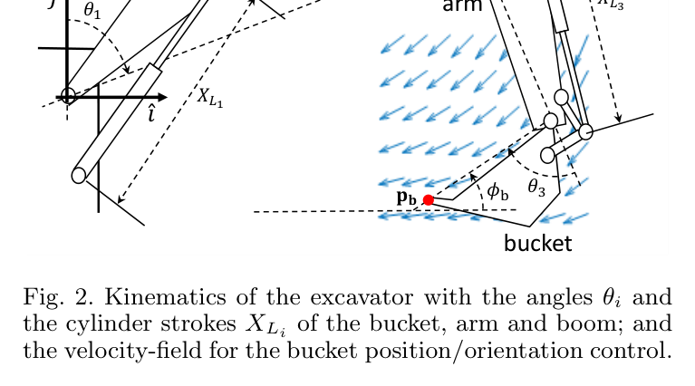
원문 Figure 2 · PDF p.3 — Fig. 2. Kinematics of the excavator with the angles θi and the cylinder strokes XLi of the bucket, arm and boom; and the velocity-field for the bucket position/orientation control.
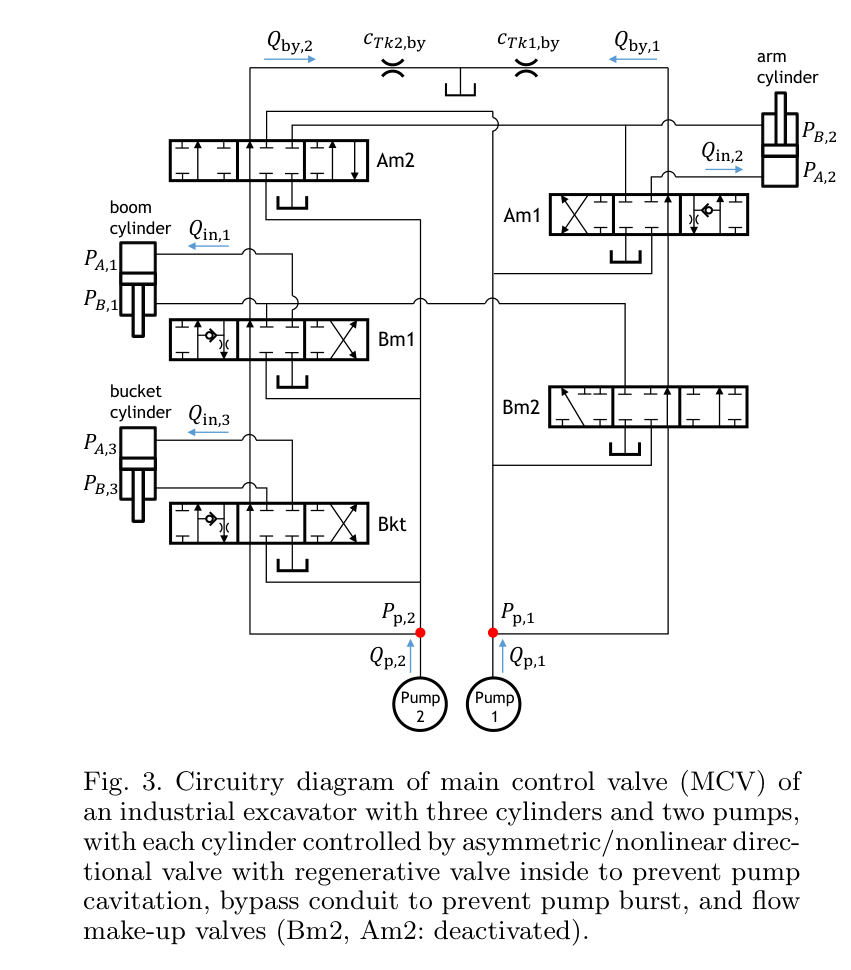
원문 Figure 3 · PDF p.4 — Fig. 3. Circuitry diagram of main control valve (MCV) of an industrial excavator with three cylinders and two pumps, with each cylinder controlled by asymmetric/nonlinear direc- tional valve with regenerative valve inside to prevent pump cavitation, bypass conduit to prevent pump burst, and flow make-up valves (Bm2, Am2: deactivated).
선행 연구의 한계
기존 유압 제어 연구는 붐·암·버킷마다 독립 펌프와 밸브가 있다고 가정하는 경우가 많다.
선행 MCV 모델 기반 연구는 직선 추종에 한정되고 펌프 유량·스풀 한계와 비선형 회로 전환을 충분히 고려하지 않았다.
학습 기반 MCV 제어는 복잡한 회로 모델을 우회하지만 물리 제약과 해 존재성을 명시적으로 보장하기 어렵다.
일반 위치궤적 추종은 장애물에 오래 막힌 뒤 누적 오차 때문에 큰 제어입력이나 부적절한 복귀 방향을 만들 수 있다.
이 연구의 기여
비대칭·비선형 방향제어밸브, 재생 체크밸브, 바이패스, 두 펌프 유량 제약을 포함한 MCV 수학 모델을 유도했다.
버킷 위치와 자세의 목표 속도장 방향을 유지하면서 속도계수 λ를 최대로 하는 제약 최적화 문제를 정식화했다.
각 반복에서 두 개의 스칼라 방정식과 여덟 개의 부등식만 계산하는 실시간 divide-and-conquer 알고리즘을 제시했다.
해의 존재성, 일부 조건에서 전역 최적성 및 그 밖의 조건에서 국소 최적성을 이론적으로 분석했다.
버킷 상태는 위치와 자세로 구성된 SE(2) 좌표 q로 표현하고, 붐·암·버킷 실린더 길이와 속도는 자코비안으로 버킷 속도에 연결한다. 원하는 속도장 벡터를 실린더 목표속도와 유입 유량으로 변환한 뒤, 펌프 용량과 밸브 상태가 허용하는 가장 큰 공통 배율 λ를 찾는다. λ=1이면 원래 속도장을 완전히 추종하고, 0<λ<1이면 같은 적분곡선을 더 천천히 따라가며, λ=0이면 정지한다.
MCV 모델은 방향밸브 오리피스 유량, 비대칭 실린더 면적, 압력에 따라 열리는 재생 체크밸브, 스풀 위치와 반대로 변하는 바이패스 개구, 펌프 제어논리를 결합한다. 제어 시점마다 원하는 실린더 속도와 측정 챔버 압력을 고정하고 λ를 시험한다. 펌프 유량 한계, 세 실린더의 역류 방지 조건, 세 스풀 이동 한계를 모두 만족하면 λ를 높이고 하나라도 위반하면 낮춘다.
처리 파이프라인
1
버킷 속도장을 실린더 속도로 변환
현재 버킷 위치·자세에서 목표 속도장 v_b^d를 평가하고 비특이 자코비안의 역을 사용해 붐·암·버킷 실린더의 목표속도 V_L^d와 목표 유입·배출 유량을 구한다.
2
MCV 구성요소 모델링
비대칭 실린더와 비선형 방향밸브의 힘-유량 관계, 재생회로의 체크밸브 개폐, 바이패스 유량과 두 펌프의 압력 의존 공급량을 수식화한다.
3
후보 속도계수 λ 평가
후보 λ에 대해 목표 유량을 λ배하고 두 MCV 구성 방정식을 Newton-Raphson으로 풀어 펌프 압력과 회로 상태를 구한다.
4
물리 제약 검사
두 펌프 유량 제약, 세 실린더의 no-back-flow 조건, 세 방향밸브 스풀 이동 한계를 확인한다. 총 여덟 개 부등식이 모두 만족돼야 후보가 실행 가능하다.
5
divide-and-conquer 최대화
λ=1부터 시작해 가능하면 반환하고, 불가능하면 간격을 절반으로 줄이며 가능·불가능 경계를 탐색한다. 허용오차 ε 안에서 최대 또는 국소 최대 λ와 스풀 명령을 출력한다.
스풀 위치, 공급력과 피스톤 하중으로 비대칭 실린더 속도를 표현하며 역류와 비선형 개구 특성을 반영한다.
속도계수 최적화
\max_{\lambda\in[0,1]}\lambda\quad\text{s.t. pump-flow, no-back-flow, and spool-travel constraints}
MCV가 허용하는 최대 작업속도를 찾되 목표 속도장의 방향은 변경하지 않는 핵심 제어 문제다.
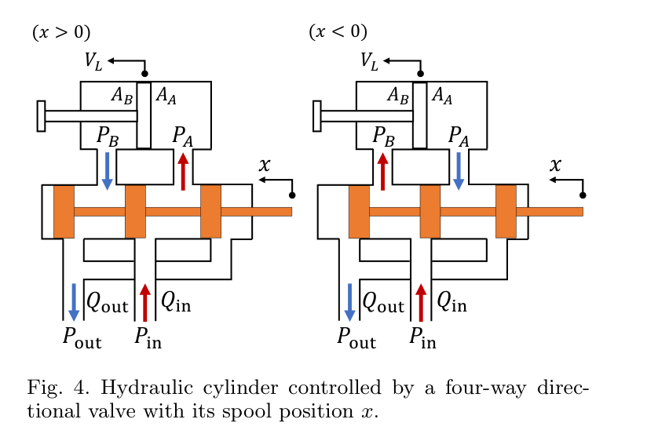
원문 Figure 4 · PDF p.4 — Fig. 4. Hydraulic cylinder controlled by a four-way direc- tional valve with its spool position x.
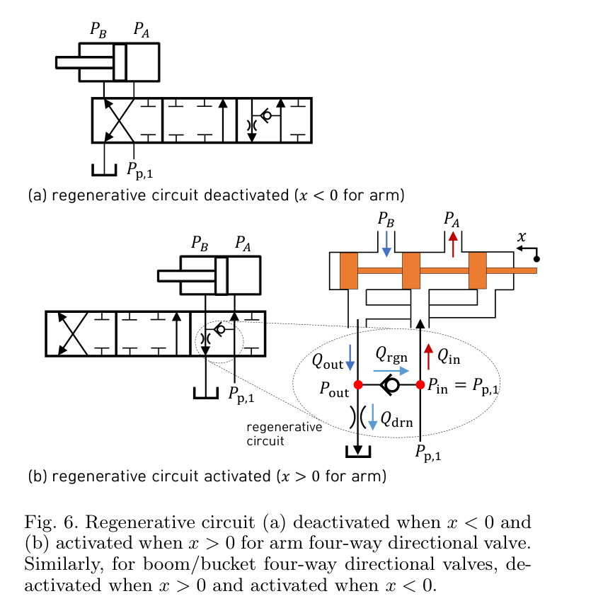
원문 Figure 6 · PDF p.6 — Fig. 6. Regenerative circuit (a) deactivated when x < 0 and (b) activated when x > 0 for arm four-way directional valve. Similarly, for boom/bucket four-way directional valves, de- activated when x > 0 and activated when x < 0.
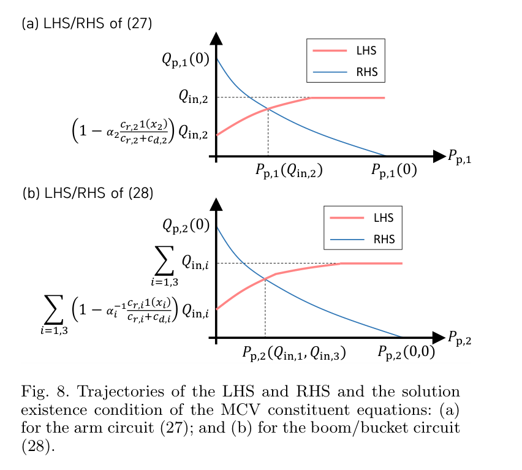
원문 Figure 8 · PDF p.8 — Fig. 8. Trajectories of the LHS and RHS and the solution existence condition of the MCV constituent equations: (a) for the arm circuit (27); and (b) for the boom/bucket circuit (28).
3.핵심 기술
전환 가능한 MCV의 해석 모델
Pump 1은 암 회로에, Pump 2는 붐과 버킷 회로에 연결돼 있고 각 밸브 내부 재생회로가 특정 스풀 방향에서 활성화된다. 논문은 배출 유량과 펌프 압력이 주어졌을 때 재생 체크밸브의 개폐와 배출압을 명시적으로 구하는 식을 유도한다. 이로써 모든 개폐 조합을 열거하지 않고 후보 λ 하나마다 회로 상태를 계산할 수 있다.
재생회로는 탱크 측 유량을 펌프 측으로 되돌려 공동현상을 방지한다.
바이패스는 스풀이 닫혔을 때 펌프 유량을 탱크로 보내 펌프 과압을 막는다.
펌프 공급압은 고정값이 아니라 펌프 제어논리와 전체 MCV 유량 균형에서 함께 결정된다.
방향 보존형 속도 축소
유량 포화나 큰 외력이 발생할 때 관절마다 독립적으로 포화시키면 버킷 속도 방향이 왜곡돼 궤적에서 벗어날 수 있다. 이 제어기는 세 실린더 목표속도에 동일한 λ를 곱하므로 버킷이 느려지더라도 목표 속도장의 방향을 유지한다. 장애물에서 λ가 0으로 수렴하면 정지하고, 제약이 완화되면 동일한 속도장에 따라 다시 진행한다.
λ=1은 완전 추종, 0<λ<1은 방향 보존 감속, λ=0은 자동 정지를 뜻한다.
챔버 압력 피드백이 피스톤 부하를 반영해 토양 외력에 대응한다.
위치오차 누적 대신 현재 상태의 속도장 벡터를 사용해 장애물 제거 후 복귀가 자연스럽다.
해 존재성을 갖는 경량 최적화
λ=0과 닫힌 스풀은 항상 가능한 해이고, 충분히 작은 양의 λ도 펌프 조건 아래 실행 가능하다. 붐·버킷 목표 실린더 속도가 비음수이면 실행 가능 집합이 [0, λ_min] 형태로 볼록해 전역 최대를 찾는다. 재생회로가 열릴 수 있는 반대 방향에서는 비볼록 구간이 생길 수 있어 국소 최대 보장으로 약해지지만, 알고리즘은 유한 반복 안에 실행 가능한 해를 반환한다.
반복 횟수 상한은 N=ceil(-log2 ε)이다.
각 반복은 두 스칼라 방정식과 여덟 명시적 부등식 검사로 구성된다.
재생회로 개방 후 비볼록 구간에서는 서로 다른 국소 최대 사이 전환으로 채터링 가능성이 남는다.
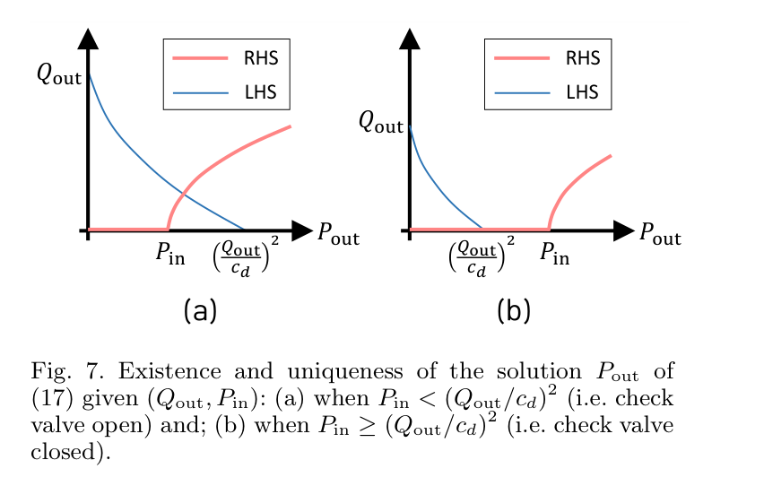
원문 Figure 7 · PDF p.6 — Fig. 7. Existence and uniqueness of the solution Pout of (17) given (Qout, Pin): (a) when Pin < (Qout/cd)2 (i.e. check valve open) and; (b) when Pin ≥(Qout/cd)2 (i.e. check valve closed).
4.실험 결과
실험 환경·장비·데이터
유체 압축성, 점도와 상세 밸브 모델을 포함한 Simulink/Sim-Hydraulics 시뮬레이션을 사용했다.
상용 22톤급 굴착기와 유사한 붐·암·버킷 기구학, 관성, 마찰 파라미터를 적용했다.
제약 최적화 제어 갱신율은 100Hz, 허용오차 ε는 10^-7로 설정했다.
버킷 끝단은 x=3.5m에서 6.5m 사이에서 자세가 45도에서 120도로 변하는 둥근 직사각형 형태의 굴착 경로를 따랐다.
자유공간, 50kN 바이어스와 무작위 성분을 가진 토양 저항력, 정지 작업 중 단단한 장애물 접촉의 세 조건을 시험했다.
실험 프로토콜
자유공간에서 목표 속도장, 실제 버킷 궤적, λ, 스풀 명령과 세 실린더 속도를 비교했다.
지면 아래에서만 토양 저항력을 적용하고 동일 경로를 반복해 압력 피드백 기반 외란 대응을 확인했다.
정지 경로 중 단단한 장애물을 접촉시킨 뒤 약 27초에 제거해 자동 감속·정지·재개를 확인했다.
유량 포화와 회로 전환 시에도 실제 실린더 속도 비율과 버킷 운동 방향이 유지되는지 관찰했다.
비교 기준
별도 제어 알고리즘과의 정량 베이스라인 비교는 없으며 자유공간·토양 외란·장애물 조건에서 동일 제어기의 거동을 비교했다.
목표 궤적과 목표 실린더 속도를 기준으로 실제 궤적·속도·λ를 검증했다.
평가 지표
버킷 끝단 궤적과 자세의 목표 경로 추종
세 실린더의 λV_L^d 대비 실제 속도
속도계수 λ와 스풀 명령의 시간응답
최적화 반복 수와 스칼라 방정식 계산시간
장애물 접촉 시 λ의 0 수렴과 제거 후 작업 재개
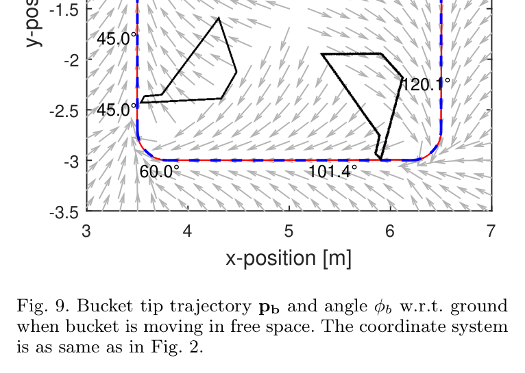
원문 Figure 9 · PDF p.14 — Fig. 9. Bucket tip trajectory pb and angle φb w.r.t. ground when bucket is moving in free space. The coordinate system is as same as in Fig. 2.
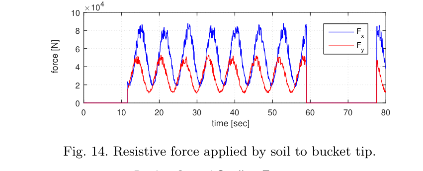
원문 Figure 14 · PDF p.16 — Fig. 14. Resistive force applied by soil to bucket tip.
핵심 결과 해석
자유공간에서는 유량 제약이 활성화돼 λ가 1보다 작아지는 구간에도 실제 실린더 속도가 공통 배율로 축소된 목표를 따랐고, 버킷 끝단은 원하는 속도장 방향과 둥근 직사각형 경로를 유지했다. 토양 조건에서는 불연속 저항력과 유체 압축성 때문에 순간 속도 오차가 발생했지만, 챔버 압력이 외력 정보를 최적화에 전달해 경로 전체는 유지됐다.
장애물 시험에서 버킷은 목표 방향을 바꾸지 않은 채 감속하고 λ가 0으로 수렴해 정지했다. 장애물을 약 27초에 제거한 뒤 다시 속도장을 따라 진행했다. ε=10^-7에서 알고리즘은 약 23회 반복했으며, 각 회의 두 스칼라 방정식은 일반적으로 10회 미만 Newton-Raphson 반복과 약 0.052ms 계산으로 풀렸다고 보고한다. 다만 모든 검증은 시뮬레이션이고, 실제 MCV의 deadband·누설·센서잡음이 포함된 실차 성능은 제시하지 않았다.
정량 결과
평가 항목
정량 결과
조건·맥락
원문 근거
제어 갱신율
100Hz
상세 Simulink/Sim-Hydraulics 시뮬레이션
PDF p.14
최적화 허용오차와 반복 수
ε=10^-7, 약 23회
divide-and-conquer 속도계수 탐색
PDF p.14
스칼라 방정식 계산
일반적으로 10회 미만 Newton-Raphson 반복, 약 0.052ms
3.30GHz CPU·16GB 메모리 PC에서 보고된 계산
PDF p.11
목표 버킷 자세 범위
45도→120도
x=3.5m에서 6.5m 구간의 목표 굴착 경로
PDF p.14
토양 저항력 모델
50kN 바이어스의 사인파와 무작위 외란
지면 아래 버킷에 적용한 시뮬레이션 외력
PDF p.15
장애물 접촉 시 자동 정지
약 27초 이후 λ→0
정지 작업 중 단단한 장애물을 만나고 제거한 시험
PDF p.17
실패 사례와 경계조건
토양 저항력이 불연속으로 적용되거나 스풀 개방 방향이 급변하면 유체 압축성 때문에 실린더 속도 오차가 순간적으로 튄다.
붐 또는 버킷 재생회로가 열리는 방향에서는 실행 가능 집합이 비볼록할 수 있어 전역 최적 대신 국소 최적만 보장된다.
시간에 따라 국소 최대가 바뀌면 출력 λ와 스풀 명령에 채터링이 발생할 수 있으나 본 논문은 이를 해결하지 않는다.
실제 굴착기에서는 무시한 밸브 deadband, 유체 압축성, make-up·priority 밸브 동작이 모델 오차를 만들 수 있다.
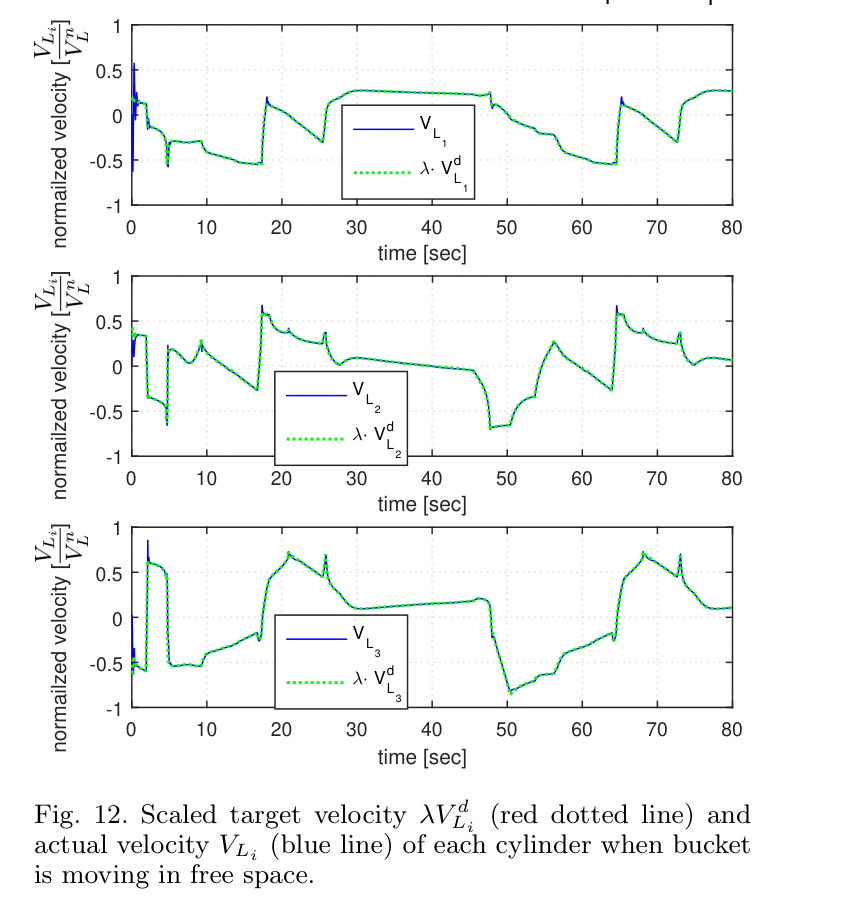
원문 Figure 12 · PDF p.15 — Fig. 12. Scaled target velocity λV d Li (red dotted line) and actual velocity VLi (blue line) of each cylinder when bucket is moving in free space.
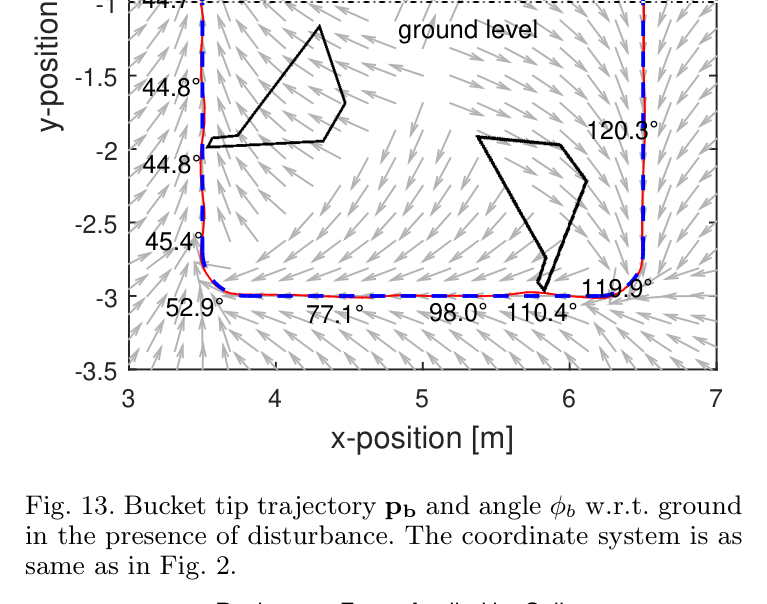
원문 Figure 13 · PDF p.16 — Fig. 13. Bucket tip trajectory pb and angle φb w.r.t. ground in the presence of disturbance. The coordinate system is as same as in Fig. 2.
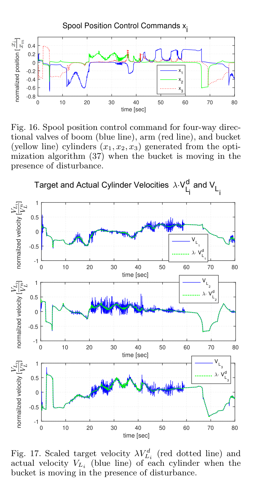
원문 Figure 17 · PDF p.16 — Fig. 17. Scaled target velocity λV d Li (red dotted line) and actual velocity VLi (blue line) of each cylinder when the bucket is moving in the presence of disturbance.
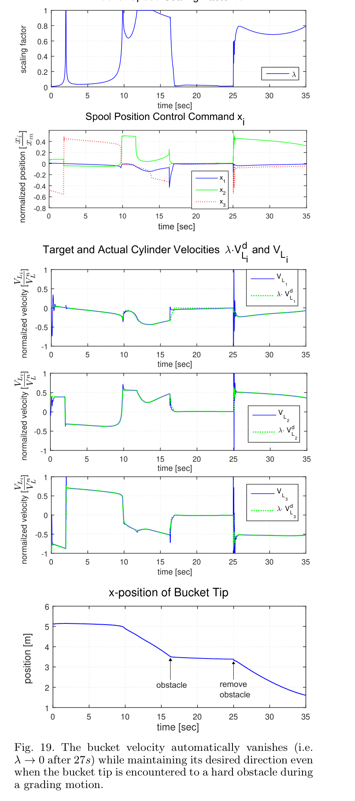
원문 Figure 19 · PDF p.17 — Fig. 19. The bucket velocity automatically vanishes (i.e. λ →0 after 27s) while maintaining its desired direction even when the bucket tip is encountered to a hard obstacle during a grading motion.
5.한계 및 향후 연구
현재 한계
실험이 상세 시뮬레이션에 한정되고 실제 산업용 굴착기 MCV에서 검증되지 않았다.
제어 모델은 유체 압축성을 무시한 정상상태 유량식을 사용하며 시뮬레이터에서만 압축성을 포함했다.
방향밸브 deadband를 접어 없애고 스풀 저수준 위치제어가 충분히 빠르고 정확하다고 가정했다.
사지탈 평면의 붐·암·버킷만 다루고 선회 축은 별도 액추에이터로 분리했다.
Bm2·Am2 make-up 밸브와 priority valve를 비활성 또는 제외해 모든 실제 MCV 운전모드를 포함하지 않는다.
재생회로 개방 후 비볼록 영역의 채터링과 전역 최적성 문제가 남는다.
향후 연구
주어진 작업 목표에서 원하는 속도장을 자동 생성하는 상위 계획기를 개발한다.
고수준 버킷 속도 피드백을 추가해 모델 오차와 외란에 대한 추종 성능을 높인다.
실제 산업용 자율 굴착기에서 펌프·스풀·압력 센서가 포함된 폐루프 실험을 수행한다.
deadband·압축성·누설과 전환 지연을 포함한 강인 또는 적응형 MCV 모델로 확장한다.
비볼록 실행 가능 영역에서 채터링을 억제하는 연속화·히스테리시스 전략을 추가한다.
6.한마디로 정리
핵심 방법은?
MCV 전체 유압회로와 제약을 모델링한 뒤 목표 버킷 속도장에 공통 배율 λ를 적용하고 실행 가능한 최대 λ를 이분형 탐색으로 구한다.
핵심 결과는?
100Hz 시뮬레이션에서 유량 포화와 토양 외력 중에도 운동 방향을 유지했고, 단단한 장애물에서는 λ가 0으로 수렴해 자동 정지했다.
한계는?
실차 검증이 없고 deadband·압축성·일부 MCV 밸브가 단순화됐으며 재생회로 방향에서는 국소 최적과 채터링 가능성이 남는다.
#제어·MPC#시스템통합·현장실증#MCV 유량·압력 모델링#속도장 제어#제약 최적화#QP
나의 의견 / 우리 연구와의 연관성
이 논문은 자율 굴착 계획기가 만든 버킷 속도를 실제 산업용 유압장비 명령으로 변환하는 중간 계층의 핵심 문제를 다룬다. 상위 경로가 기하학적으로 타당해도 공유 펌프와 밸브 포화를 무시하면 실행 중 방향이 왜곡될 수 있으므로, 유량·압력 제약을 계획 단계에 피드백해야 한다는 근거를 제공한다.
후속 데이터 기반 역모델이나 MPC와 결합할 때도 λ 기반 방향 보존 안전층을 독립적으로 둘 수 있다. 학습 모델이 명령을 제안하더라도 MCV 물리 제약을 만족하지 않으면 공통 감속하거나 정지시키는 설명 가능한 제약 필터로 활용 가능하다.
경로 계획과 저수준 스풀 제어 사이의 유압 실행 가능성 검사기로 사용할 수 있다.
공유 펌프 유량을 고려한 공통 속도 축소는 다관절 포화에서 궤적 방향 왜곡을 줄인다.
압력 기반 외력 보상과 장애물 자동 정지는 안전 감시 계층으로 연결된다.
실차 데이터 기반 MCV 식별을 추가하면 모델 오차를 줄이면서 물리 제약 구조를 유지할 수 있다.
7.전체 그림·표
본문 핵심 위치에 배치하지 않은 원문 Figure와 Table을 원문 페이지 순서로 수록한다.
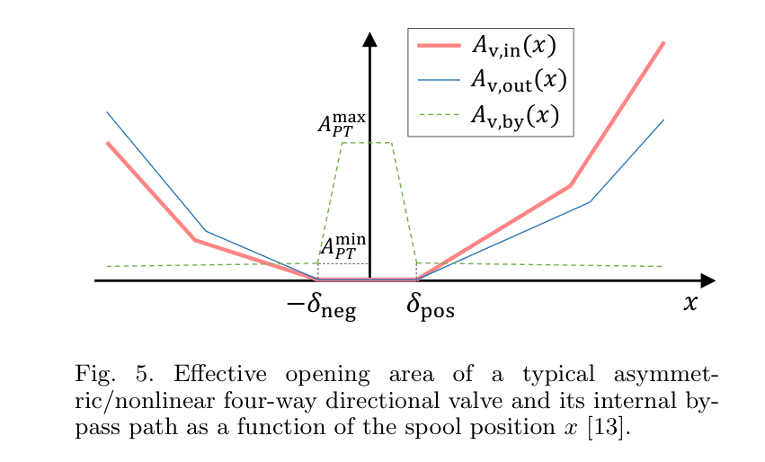
원문 Figure 5 · PDF p.5 — Fig. 5. Effective opening area of a typical asymmet- ric/nonlinear four-way directional valve and its internal by- pass path as a function of the spool position x [13].
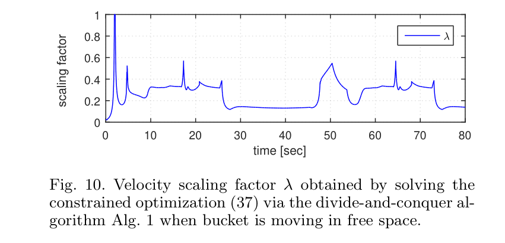
원문 Figure 10 · PDF p.15 — Fig. 10. Velocity scaling factor λ obtained by solving the constrained optimization (37) via the divide-and-conquer al- gorithm Alg. 1 when bucket is moving in free space.
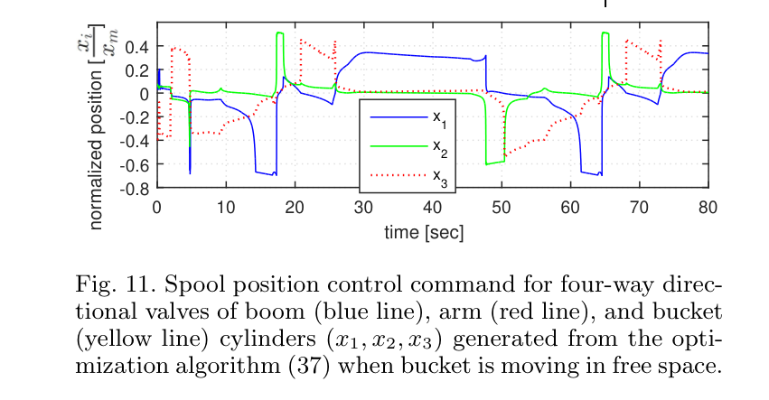
원문 Figure 11 · PDF p.15 — Fig. 11. Spool position control command for four-way direc- tional valves of boom (blue line), arm (red line), and bucket (yellow line) cylinders (x1, x2, x3) generated from the opti- mization algorithm (37) when bucket is moving in free space.
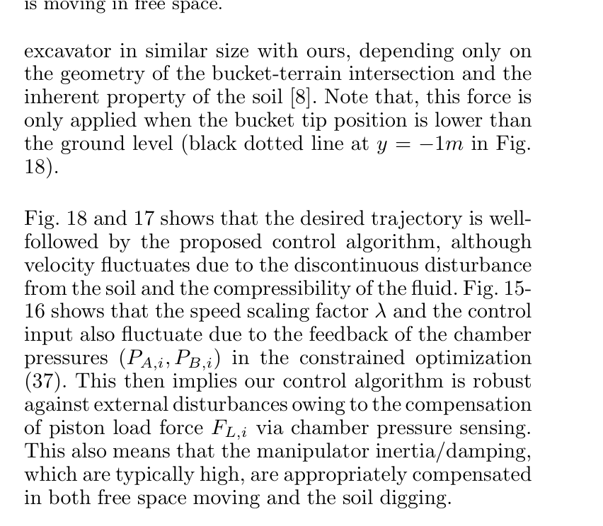
원문 Figure 18 · PDF p.15 — Fig. 18 and 17 shows that the desired trajectory is well- followed by the proposed control algorithm, although velocity fluctuates due to the discontinuous disturbance from the soil and the compressibility of the fluid. Fig. 15- 16 shows that the speed scaling factor λ and the control input also fluctuate due to the feedback of the chamber pressures (PA,i, PB,i) in the constrained optimization (37). This then implies our control algorithm is robust against external disturbances owing to the compensation of piston load force FL,i via chamber pressure sensing. This also means that the manipulator inertia/damping, which are typically high, are appropriately compensated in both free space moving and the soil digging.
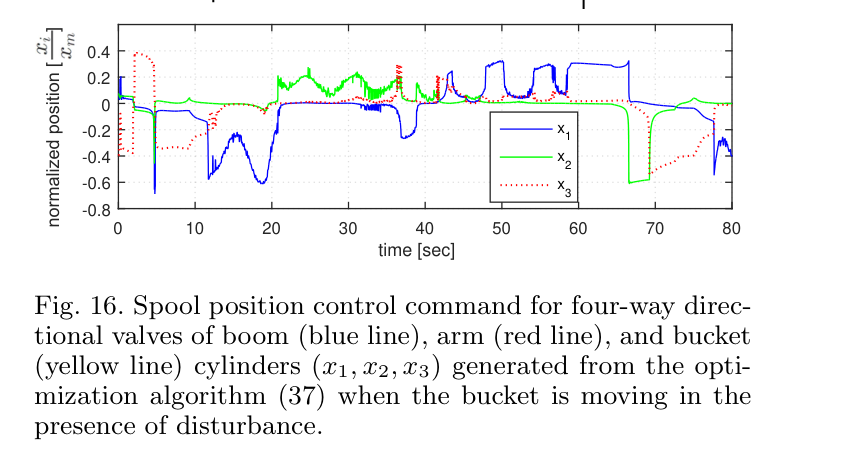
원문 Figure 16 · PDF p.16 — Fig. 16. Spool position control command for four-way direc- tional valves of boom (blue line), arm (red line), and bucket (yellow line) cylinders (x1, x2, x3) generated from the opti- mization algorithm (37) when the bucket is moving in the presence of disturbance.
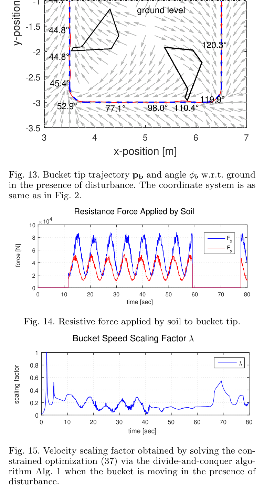
원문 Figure 15 · PDF p.16 — Fig. 15. Velocity scaling factor obtained by solving the con- strained optimization (37) via the divide-and-conquer algo- rithm Alg. 1 when the bucket is moving in the presence of disturbance.
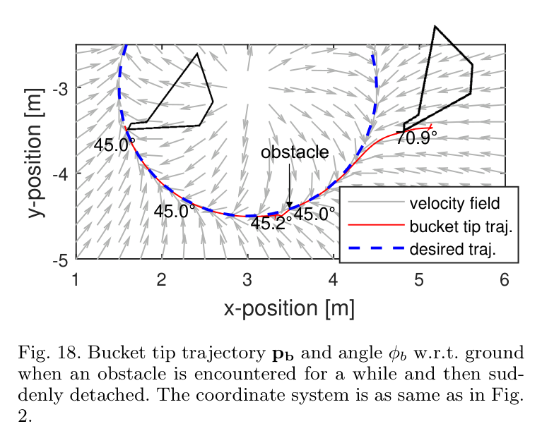
원문 Figure 18 · PDF p.17 — Fig. 18. Bucket tip trajectory pb and angle φb w.r.t. ground when an obstacle is encountered for a while and then sud- denly detached. The coordinate system is as same as in Fig. 2.